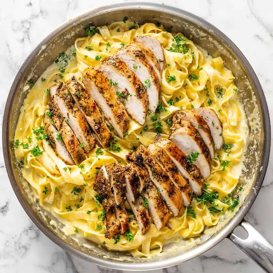

This classic Chicken Alfredo relies on a handful of rich ingredients to create a restaurant-quality meal in under 30 minutes. The dish brings together thin, golden-seared chicken breasts seasoned with garlic powder and Italian seasoning, tender fettuccine pasta, and a velvety, homemade cream sauce made from unsalted butter, fresh minced garlic, heavy whipping cream, and freshly grated Parmesan cheese. To prepare it, you start by boiling the pasta while simultaneously searing the seasoned chicken in a hot skillet until cooked through. After removing the chicken to rest and slice, you lower the heat and use the same flavorful pan to melt the butter, sauté the garlic, and simmer the heavy cream. Once the cream is hot, you stir in the freshly grated Parmesan cheese until smooth and velvety, then toss the noodles and sliced chicken directly into the sauce to serve immediately.